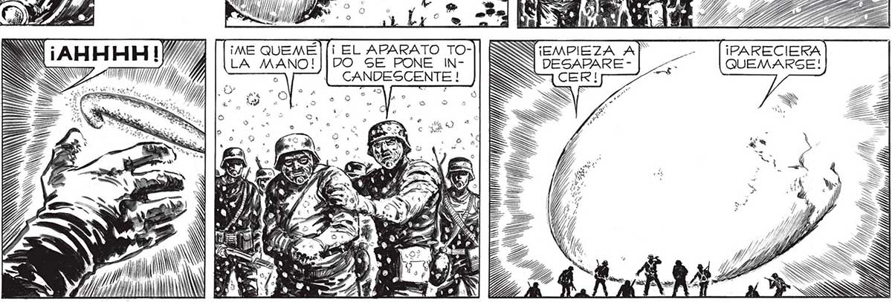
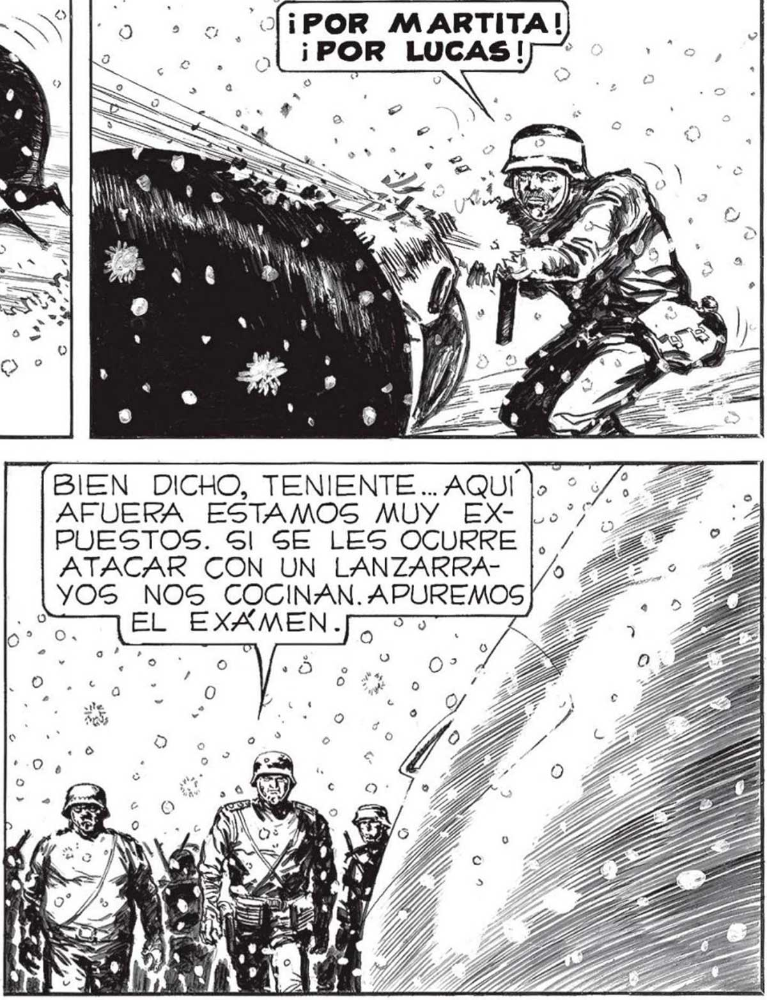

$. q — EL CALOR QU LA BAYONETA... Gl. Sl SE LES ATACA A FON¡ESTA VEZ Sl QUE LE DIMOS LA GRAN BAESTA ESCOTILLA DEBE DE. SER LA ENTRADA. POR LOGICA TIENE QUE ABRIRSE, TANTO DESDE ADENTRO CO-: MO DESDE AFUERA..PERO... Ñ NI N ¡SIEMPRE ADELANTE! ¡QUE NO QUE NINGUNO! = ANI PEI. LA LOCURA, ME EMBRIAGARON. FUI FIERA HAMBRIENTA DE MUERTE... (¡POR ELENA! 23" 0. DÉJATE DE PAMPLINAS ¡BRAVO, JUAN! A ESTE PASO SERAS EL LIZA! ¿EH, TENIENTES] | DO NO PUE- LA VICTORIA ||OFICIAL MAS CONDE-| | Y MIREMOS _ : 3 7 DEN RESISTIR. FUE COM- CORADO DE LA GUE-| |DE UNA VEZ : PLETA: NI RRA... Y MERECIDO, |] [COMO ES UNO SOLO POR CIERTO... POR DENTRO DE LOS ESA ESPECASCARUDOS CIE DE PLAESCAPO TO VOLADOR, CON VIDA. : POCO. 6 DESPUES <= NUESTRO “A ESTADO > "li MAYOR b e SE NOS > REUNIA. > ¡ ELAPARATO TODO SE PONE INCANDESCENTE ! ¡ME QUEMÉ LA MANO! 2 NN ll e z NN E del ... EN AQUELLOS CUERPOS ODIADOS A Ú JIiEMPIEZA AL YA no O A 8 o l 9 FUE COMBATE. FUE MASACRE . o 1d a > Co > o o[¡POR_MARTITA!) AFUERA ESTAMOS MUY PUESTOS. 6l SE LES OCURRE ATACAR CON UN LANZARRAYOGS NOS COCINAN. APUREMOS EL EXAMEN. WN Ú Ñ W AN , N 0 Ñ WN ANN ¡PARECIERA DESAPARE - QUEMARSE:

